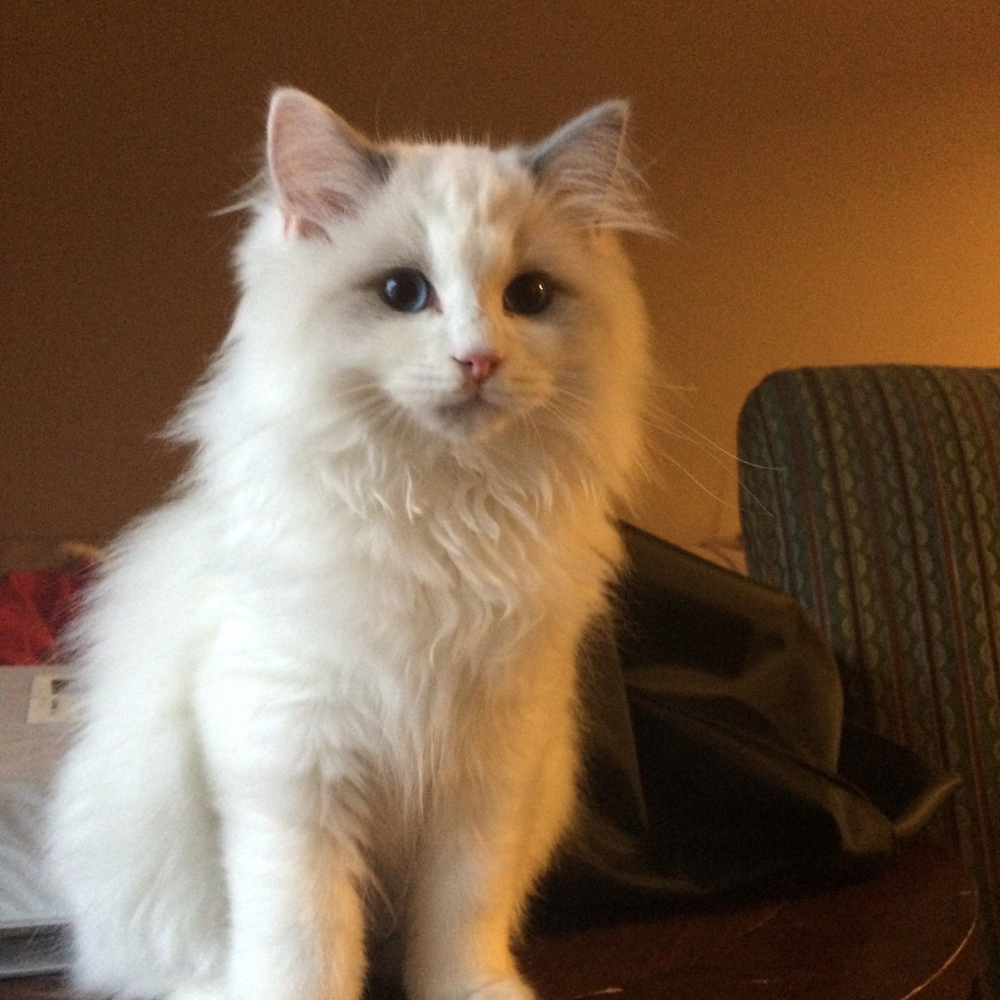

Nice to meet you!
My name is Kyoko, Kimura. I was born in Kyoto, Japan, where my parents own a Wakashi (traditional Japanese sweets and desserts) shop. I am an undergraduate student in Kyoto University majoring Japanese literature. Currently I am in a one-year exchange program at University of British Columbia in Vancouver, Canada.
About this website
My apartment in Vancouver have an oven so I decided to learn how to bake western desserts and bakery! I have tried out baking cookies, cupcake and macaroons recently. I will share the recipes with you on this website. I will also post the videos of how I made them after a short while.
The Neko Cafe
My friends decided to open a cat cafe in Kyoto after graduation. A Cat cafe is a theme cafe whose attraction is cats that can be watched and played with. We will offer a variety of coffee and desserts (part of the reason why I decided to learn baking!) at our cafe. We will be adopting cats from local animal shelter. Customers are welcome to play with our cats and adoption can be negotiated. Feel free to contact me if you have any ideas or suggestions about the cat cafe.
=> This is Sorata. He will be the mascot of our cat cafe. He is a 4-month-old blue bicolor Ragdoll. He is very affectionate and LOVE to play with people. xD